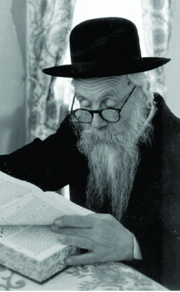

The Chassid Who Refused to Back Down
For many years, the NKVD kept R’ Gavriel under surveillance. They waited for the day that he would fall into their hands, and that day finally arrived. For many months he was interrogated. Following a wondrous dream of the Rebbe, he was released. * The story of the Chassid, R’ Shlomo Zelkind Kapilkov, known as R’ Gavriel Kagan.

His father, who would go to Lubavitch to the Rebbe Maharash and then later to the Rebbe Rashab, gave him a Chassidishe chinuch. He sent his son to learn in Yeshivas Tomchei T’mimim in Lubavitch.
R’ Shlomo arrived in Lubavitch on the night of Hoshana Raba 5665/1904, at the age of 15. After Simchas Torah, he was accepted to the big zal where the older bachurim learned. He learned Nigleh under R’ Zev Levitin, and Chassidus under the mashpia R’ Michoel Bliner.
He learned for only one year in Lubavitch and also had yechidus with the Rebbe Rashab. At the beginning of 5666, he was sent with other bachurim to learn in Dokshitz where a branch of Tomchei T’mimim had opened under R’ Yehoshua Laine. He learned there until the summer of 5667 when he became sick and had to return home. By Divine Providence, his teacher R’ Yehoshua Laine also went to his parents in Nevel to recover after an illness, and the two of them could be seen walking together and learning Chassidus.
He did not return to Tomchei T’mimim but did go to the Rebbe Rashab, and in 5669 he was accepted again for yechidus.
When he became of draft age, he acquired forged documents under the name Gavriel Kagan and was not drafted. Since then, he was known as Gavriel Kagan.
In Nissan 5671, he married Miriam, the daughter of R’ Nachum Tcherniovsky who belonged to the Litvishe community in Berezne, Ukraine. That is where they settled down. His good friend was the rav of the city, R’ Shneur Zalman Garelik, later the rav of Kfar Chabad.
He sold fabric and did very well. He became a wealthy man though he worked hard for his money. He often had to travel by horse and wagon through distant towns and villages in order to buy merchandise, and traveling was dangerous.
On one of these trips, he was attacked by bandits who stole all his money and the merchandise he had. This occurred close to where he lived. The robbers feared he would report them and decided to kill him. They told him to stand near a tree with his back to them. One of them drew his gun and prepared to shoot. As R’ Gavriel stood there, he pictured the Rebbe Rashab and asked for mercy for him and his family who would be left without a source of support.
One of the robbers suddenly said to his fellow, “Let’s leave him. He won’t dare tattle.” The other robber agreed and they sent him home.
Although he devoted many hours to his work, he was particular about having set times to learn Chassidus. As the Rebbe Rashab told him in yechidus, “You must learn Chassidus every day. You also need Nigleh, but Chassidus is a must.”
During the years that he lived in Berezina, he managed to convince some people to send their sons to learn in Tomchei T’mimim. In 5680/1920, he opened a small yeshiva. This was after going from house to house to convince parents not to be afraid of the communist government that threatened anyone who sent their children to learn Torah with dire punishments. With great effort he managed to assemble a group of about thirty boys who were taught by teachers whom he personally paid.
In the winter of 5686, he and his wife and three children moved to nearby Chernigov where he opened a brush business. Half a year later he lost all his money, but even during this difficult period he would say, “Gam zu l’tova.” He was referring to the fact that the government persecuted citizens who owned businesses. Many of them were arrested for long periods. By losing his money he was saved from persecution and imprisonment. At this point, he earned a living from sh’chita.
***
For about ten years, 5688-5699, R’ Gavriel was utterly devoted to Yeshivas Tomchei T’mimim. He was both a mashgiach and a maggid shiur. He moved with his family from city to city in order to teach bachurim in the various secret yeshivos.
In the summer of 5688 he was appointed mashgiach in the yeshiva in Vitebsk in White Russia. At the beginning of 5689, the menahel of the yeshiva, R’ Avrohom Drizin, appointed him maggid shir of thirty bachurim to whom he taught Nigleh and Chassidus. He taught them for a few months and then was forced to move away.
At this time, the yeshiva and beis midrash for rabbanim in Nevel were closed by the communists. Some of the talmidim went with their teachers and mashpiim to Vitebsk. Then there was fear of surveillance and persecution because of the many students. It was decided that they would open another branch in Mogilev.
R’ Gavriel was sent to Mogilev in the winter of 5689 where he made the necessary preparations for the bachurim. Shortly thereafter, a group of bachurim came from Vitebsk, whom he set up in pairs so they could learn in various shuls so that they would go unnoticed. They only gathered together for a few hours a day, in a hidden place, where R’ Gavriel gave them shiurim.
The peaceful days did not last for long. Later in 1949, when he was in France after leaving the Soviet Union, he described his experiences:
“In the winter of 5690, on the 8th of Teves, I had to escape from there, because that night when we gathered to learn together, the secret police realized that people were gathering every night in a certain place. Three of them came in to see what was going on and they caught me with the talmidim. They brought us to the place the secret police used for questioning. However, since they were all non-Jews, they did not realize we were part of Tomchei T’mimim. They thought I was a local teacher for the local students, which was also a big crime. I was miraculously saved; just my documents remained with them. I informed the talmidim that I had to escape from there and they shouldn’t budge. They should learn on their own until a teacher would be sent to them from Vitebsk.
“They sent one of the great talmidim, Moshe Svedskai, and he became their leader… The next day, 8 Teves, the government found out that the group of talmidim I taught was a branch of Tomchei T’mimim. They searched for me for days, not only in Mogilev but also in other nearby cities of White Russia. I escaped to the Ukraine and with Hashem’s help, returned to Chernigov.”
In Chernigov, he did not have a livelihood until Hashem sent him a job as the Shamash in the city’s big shul. R’ Gavriel had tremendous mesirus nefesh. Although he was forced to flee because he was caught teaching Torah, he began teaching again as he recounted:
“A few young boys, twelve and thirteen years old, came to me in Chernigov from Tomchei T’mimim. I set them up and learned with them, but secretly. In front of others in the beis midrash, I treated them as complete strangers so nobody would know that they had come to Chernigov because of me. After everybody went home and I remained in the beis midrash as shamashim do, I learned with them behind closed doors.
“These were the talmidim who came to me in Chernigov: Yekusiel Kalmanson, Moshe Raskin the son of the shochet from Zhlobin, Dovber (Berel) Robinson, Yisachar Dovber Gorewitz of Zhlobin, and Chaim Boruch Alevsky the son of the shochet from Suraz (who later married my oldest daughter). They were with me for about two to three years, and then as older students only two of them sat in the beis midrash and learned on their own.
“In 5697, more young talmidim came to me in my beis midrash from cities of the Ukraine. Yisachar Dovber Gorewitz came back to Chernigov, but after the summer of 5697, they began writing indictments about our beis midrash, saying we had a yeshiva with many students. Due to the fear we decided they should leave. They all left at the end of that summer.”
One of the talmidim back then, R’ Berel Robinson of Lud, told Beis Moshiach about those days:
“For a year and a half, from 5690 and on, I learned by R’ Gavriel Kagan and I also slept in his house. The material circumstances of the talmidim were very poor. There was barely food to eat and the talmidim suffered from various illnesses. I became lice-ridden; they crawled all over me and bothered me tremendously.
“Since in R’ Gavriel’s one room home there was no place to put a bed for me, I slept on the stone stove in the corner of the room. One night, I had nearly nodded off when I suddenly felt the melamed R’ Gavriel going quietly over to my clothes. He took them to the end of the room and began washing them. With tremendous patience, he removed the lice that swarmed on them. I was eleven years old and he was an older Chassid, my teacher, and nevertheless he was concerned that I shouldn’t suffer. He wasn’t nauseated by this work but did it quietly so I shouldn’t realize it and be embarrassed.
“R’ Gavriel encouraged us to learn Tanya by heart and, as is customary, we began with the introduction. Thanks to R’ Gavriel, during the time I learned by him in Chernigov, I learned the introduction and twelve chapters of Tanya by heart.”
R’ Gavriel’s daughter, Dr. Chana Kagan of B’nei Brak, spoke about her father:
“My father,” she said emotionally, “lived a life of modesty and serenity. He was devoted and loved his children and his talmidim like his children. He never raised his voice, and whenever he entered the house we felt as though the good angel had arrived.
“It is important to me to describe the general atmosphere that prevailed in those days, the terrible fear of the secret police was so great that I did not know my father’s real name until we left the Soviet Union. I knew that he was always called Gavriel Kagan but that it was not his real name. We, his children, wondered why his mother’s name was Kapilkov and his name was Kagan. They would tell us that she remarried and that he was from her first marriage and that is why their names were different.
“My father gave his children a Chassidishe chinuch to the best of his abilities. He did not allow me to go to school until I was ten, and even then, he did not let me go to the Jewish school which was run by the Yevsektzia, but to the gentile school. I did not go to school on Shabbos. I would say I was sick or there was some family event as excuses. After a number of months, I began to feel that my excuses were no longer credible. My teacher asked me why I did not show up on Shabbos and I mumbled that I wasn’t able to come, without providing any reason.
“One of the gentile students got up and said, ‘This Jewish girl is a Subbotnitza (Sabbath observer).’ Everybody stared at me hatefully; from then on, nobody spoke to me again. I was like a leper since I was opposed to the government and observed religion.
“One Shabbos, two members of the school’s administration came to our house and yelled at my father about why I wasn’t going to school. He knew that I was clever enough to understand what he was trying to say, and he told them that as far as he was concerned there was no problem with my going to school. Then they turned to me and yelled, ‘So why don’t you go to school?’ I told them coolly, ‘My father has a bad heart and as a religious Jew he feels sick when I go to school on Saturday.’ They saw they could not convince me and they dropped it.
“After a while, my classmates realized they needed me because they wanted to copy my notes. So they became friends with me again.
“My father sent my brother, Dovid Mordechai Chaim, to learn in Tomchei T’mimim. When we lived in Vitebsk, he learned in the yeshiva there, and then he went with his friends from city to city in order to learn in the secret yeshivos.
“I remember that my father was always occupied with mitzvos for the public benefit to the point of mesirus nefesh. Until this day, I do not understand how I, who was twenty, did not know that under the bath that was at the entrance to the house, there was a secret door that led to a mikva that was built in utmost secrecy. For four years, until we left the house, it was used by quite a few Jewish families.
“My father once walked into the house with a smile on his face and said, ‘Boruch Hashem Judaism was not forgotten. A Jewish woman who was immodestly dressed came to the shul and said she wanted to put up a mezuza in her home.’ My father managed to obtain a kosher mezuza, I don’t know from where, and he put it up for her.
“It was only years later that it turned out that she was none other than an agent for the secret police. Years later, when he was being interrogated, they reminded him of that mezuza.”
R’ Gavriel Kagan officially served as the Shamash of the shul but he did all he could in all aspects of Judaism. He wrote about some of his activities:
“As far as mohalim, the mohel in Chernigov stopped performing brissin due to fear, so I announced in shul that whoever knew of a baby that needed a bris should speak to me, and I would bring a mohel from a nearby town. For many years, the mohel R’ Elchanan Segal from Homil would come. After he was caught and jailed for his holy work, I would bring mohalim from other towns. The bris would be done secretly and many communists also circumcised their babies.
“I would repeat Chassidus every Shabbos in the beis midrash during the third meal. On weekdays I would give a shiur in Gemara and after the davening a shiur in Mishnayos for the balabatim.”
In 5694, on the second night of Pesach, a large crowd gathered in the shul. He used the opportunity to speak about Pesach, while taking care not to speak directly about the subject of a pure Jewish education, a very sensitive matter to the authorities. But he couldn’t say nothing at all, and because of a few words that seemed to reflect on the topic of chinuch, he was called down to the secret police a few days later and was interrogated for hours. He was accused of telling people to educate their children in the spirit of Judaism. He was finally released with a firm warning: Remember not to speak any more propaganda against the Soviet government.
On 17 Adar 5699/1939, several Chassidim in Chernigov, including R’ Gavriel, were arrested. One of the others was R’ Menachem Mendel Schneersohn (a relative of the Rebbe, the father of R’ Shneur Zalman Schneersohn). In a careful search conducted in R’ Gavriel’s home, no incriminating material was found except for some s’farim and pictures of the Rebbe Rashab and the Rebbe Rayatz.
R’ Gavriel sat alone in his cell at NKVD headquarters in Chernigov for two weeks. Then they put a gentile in his cell.
The exhausting interrogations lasted for half a year. During the first three months, the interrogator was a Jew who accused him of counter-revolutionary activity because of his holy work: efforts to circumcise babies, the mikva, learning with children. More than anything else, the interrogator wanted to know whether R’ Gavriel corresponded with “Rabbi Schneersohn,” in the attempt to accuse him of all his activities on behalf of Judaism being done by order of the Rebbe Rayatz.
During these interrogations he suddenly realized that he had been under their watchful eyes for years. They reminded him of all the “crimes” he did, like the fact that in the year 5686, thirteen years earlier, he taught Ein Yaakov in the shul in Chernigov and during one of the shiurim he had spoken against the government.
For those three months he did not receive packages from home. The cooked food he was given was treif, of course. He would throw it out and eat only the bread. When the goy was placed in his cell, he would give him the cooked food.
“It was before Pesach,” said his daughter, “and I went to the jail and asked to give him food for Pesach, matzos that we baked at home. My father is sick, I told the natchalnik. He threw me out as soon as he realized I was Kagan’s daughter.”
As to his great suffering during that Pesach, R’ Gavriel wrote:
“It was Erev Pesach and I gave the goy all the bread that I had and I burned the crumbs of chametz, fulfilling the positive mitzva of destroying the leaven, but I was unable to fulfill the mitzva of eating matza. I just had a few pieces of onion, a reminder of the maror, and I said a borei pri ha’adama on it. That was my entire Seder. During Pesach I had sugar and water. I asked the goy to be careful that they not know that I refrained from eating, because I was afraid they would force me to eat, according to the law about one who starved himself for three days in a row.
“I suffered greatly from the interrogations during that Pesach. My heart and mind were weakened from lack of food and I was also deprived of sleep. I was also very afraid, because aside from fear of being sentenced, I worried about their finding out that I wasn’t eating. I did not want them to force-feed me. During those days they tortured me with harsh interrogations, day and night, for many hours.”
R’ Gavriel was very upset over not being able to do mitzvos, as he wrote, “I sit bereft, naked without any mitzva and without any bracha aside from the brachos of t’filla, and that too in an extremely silent manner.”
After three months, they informed him that the interrogation was over and the material had been sent to the prosecutor. After some time, he was told that the prosecutor said the material was not sufficient to incriminate him. So they put him in the hands of a tougher interrogator who accused him of spying. The man brought some forged evidence in order to prove he was a spy. The interrogator threatened that he would not leave the interrogation room alive if he did not confess. In order to make this clear, R’ Gavriel was placed in a cell for those sentenced to death.
R’ Gavriel was tremendously afraid, while being upset with himself for being afraid of them. The picture of the Rebbe Rayatz that he had was also a subject for questioning.
“Once, during an interrogation, as he held the picture of the Rebbe [Rayatz], they began quizzing me about how I had obtained it. He looked at the picture and said in frustration, ‘Ach, if we had him in our hands …’ and I thought of the verse, ‘The wicked man sees it and is angry; he gnashes his teeth and melts away.’”
Due to lack of nutrition, R’ Gavriel became sick with tzinga (megaloblastic anemia). His daughter explains:
“This disease is a result of a vitamin B deficiency. My father was only eating bread and drinking water, since he did not want to become contaminated with forbidden foods even when his health was in danger. The illness manifested in his mouth, elbows and knees, where the red blood cells are larger than usual and interfere with the flexibility of the limbs and with eating. My father had reached a point where he could not eat anymore and when they finally allowed him to receive food packages, it was too late. He could no longer eat them. More than anything else, he suffered with his feet, which became bent until he couldn’t move them at all, but it was because of this disease that he was saved from a terrible exile.”
In this poor condition he was transferred to the prison infirmary. “My feet atrophied and became bent like the letter Dalet and I couldn’t stretch them out. I lay that way, with bent feet in the infirmary, alone and in prayer for 106 days, half of Elul 5699 to 29 Kislev 5700,” he wrote in his memoir.
“On 29 Kislev, they carried me to a small room, and I saw that R’ Mendel Schneersohn had been brought there too. They read him his sentence that was received from Moscow that he would be sent to exile in Kazakhstan for five years. Then they came to me and read my sentence which was the same as his. Afterward, I remained alone with him in the room for five days until he was sent away. We were very happy over the good news that we were to remain alive. During those five days, I learned five chapters of Mishnayos from the tractate Shabbos from him, by heart. It was a veritable treasure for me.
“Before he left, he told the doctor that due to the great weakness of his heart, his life was in danger if he would be sent together with the other prisoners, but they didn’t listen to him. After he was sent away, we received the bitter news in Chernigov that he had died on the way.”
A year had passed since his arrest. On 17 Adar 5700, the prison authorities agreed to transfer R’ Gavriel to the city hospital close to his home.
“As soon as my family heard the news, they came to visit me and it was a new world to me. Every day they brought cooked food from home for me and I slowly recovered. They also brought me Mishnayos Moed and Kodshim. Thank G-d, I reviewed them many times and did not stop thinking about the Mishnayos.
“But my feet were as crooked as ever and none of the treatments in the warm baths and with electric heat helped. The doctors gave up on me and stopped coming to see me.”
The miracle occurred, and after a while, R’ Gavriel managed to stretch his legs and even to stand briefly. He hid all this from the doctors so they wouldn’t put him back in prison.
“Motzaei Tisha B’Av, I saw the Rebbe Rashab in a dream. He was sitting on a chair next to a small desk in a small room and nobody else was there. I was standing on the other side of the desk with my face to the wall and I was saying the morning brachos. The Rebbe answered amen to each bracha until I began the bracha of “HaMaavir Sheina” when he motioned to me that now I could continue silently. When I woke up, I rejoiced over this and waited for some Geula to occur.
“A doctor came to see me whom I hadn’t seen before. She examined my feet and then she left. It took a few days before I realized that this was my Geula. They told me that the doctor had written that I could not heal any more, and based on this the doctors wrote a letter to the NKVD.”
Another two weeks passed and R’ Gavriel was released in the middle of Elul 5700. He needed a cane for a short time but then he resumed walking like anyone else.
Years passed and in 5754, a relative of R’ Mendel Schneersohn submitted a request to clear his name. Her request was accepted and they cleared the names of other Chassidim who were incarcerated with him, including R’ Gavriel.
On Rosh Chodesh Elul 5701, two days before the Nazis conquered Chernigov, R’ Gavriel and his family fled the city. They boarded a train whose destination was unknown. The train traveled quickly in order to get as far away from the battlefront as possible. But the German planes followed the train and strafed it again and again. The Kagan family was miraculously saved and nobody was hurt. After traveling for two days, they got off in a tiny village where they met an old couple who had pity on them and let them sleep in their house. The Kagans slept on the floor and rejoiced, because many refugees did not have even that.
After a few days, they went to a nearby town called Kuznetsk where they lived for four years until after the war. They became friendly with the family of R’ Yitzchok Meir Greenberg, the father of Rosa, later the wife of R’ Shlomo Maidenchek, director of Agudas Chassidei Chabad in Eretz Yisroel.
At the war’s end, they moved to nearby Penza where R’ Gavriel became the Shamash in the shul. He also arranged shiurim and secret Jewish activity despite the danger this entailed.
Their daughter Chana (who was in Moscow) heard that many Chassidim were crossing the border at Lvov and escaping Russia. She wanted to inform her parents of this via telegram, but was fearful.
“I gave a lot of thought about how to write it, for it was very dangerous to write it explicitly or even to hint at it. I finally wrote daringly: I am getting married, come to Moscow.
“But this announcement did not work and my mother went to Berezina where she tried to sell the apartment we had. My father was hurt that I hadn’t informed them of any engagement. I sent another telegram saying the same thing and my father thought I had lost my mind. He immediately went to Moscow where I told him about the possibility of escaping the Soviet Union. He did not think twice about it, but went immediately to Lvov while I waited in Moscow for my mother. When she came, we also went to Lvov.”
The Kagans waited a few months in Lvov in great fear. They worked on obtaining forged documents so they could leave the country. The Rebbe Rashab appeared once again to R’ Gavriel in a dream:
“I saw the Rebbe sitting in my house at the table and writing very quickly. I had never seen such fast writing before. On the other side of the table, facing the Rebbe, was my oldest daughter, leaning on the table and looking on happily at what he wrote. My younger daughter was on her right and at the edge of the row stood my son. They also watched the writing. I stood behind my oldest daughter and I could not see anything from there except for the speed of the writing. After writing a few lines, the Rebbe extended his hand across his other hand and handed the writing to my son and said, ‘Zai gezunt.’”
Because of this dream, R’ Gavriel knew they would safely leave the Soviet Union.
After many tribulations, the Kagans boarded the last train and escaped from the country that had oppressed Judaism with an iron fist.
Dr. Chana Kagan:
“We experienced a series of miracles on the train to Poland. One evening I visited the family of R’ Zalman Bernstein. The family told me how hard it was to obtain documents and train tickets. As we spoke, R’ Zalman entered the room and excitedly told the family to pack. ‘We are going,’ he said. ‘Eight people can go.’ I helped them pack their few bundles and escorted them to the train station where I found out that a few more people could leave in exchange for money.
“I immediately went home and told my family to get ready to leave. From there, I went to R’ Mendel Futerfas to get documents from him that we needed to travel. While there, R’ Nachum Labkowski heard that I was single while my documents said I was divorced and had two children. After briefly thinking it over, I agreed to his request to ‘adopt’ two of his children so they could also escape. I went to his house in a different suburb of Lvov and took his children, Yisroel (today, a teacher in Lubavitcher Yeshiva) and Zalman (today, rosh yeshiva in 770).
“I rushed to the train station and went to the train we were supposed to board. In the distance I could see suitcases and bundles flying from the train. My parents, brother and sister had already boarded and the people in charge had said the train was leaving. I was delayed because of ‘my new children.’ My sister decided that she wasn’t going to leave me alone in the Soviet Union and they immediately began removing her bundles from the train. When I arrived, they put the bundles right back on and the train departed.
“There we were, all of us on the train, but we were very fearful. My father had a document that was obtained at the last minute and nobody knew whether the border guards would believe it was genuine. My sister Sima Chaya a”h traveled with her little boy. Her husband, R’ Chaim Boruch Alevsky, Hy”d, was killed in the war and she was listed on the document as the wife of my brother Dovid Mordechai who was single. I was constantly nervous that little Zalman, who slept in my arms, would wake up and look for his real mother.
“On the way, R’ Yehuda Leib Mochkin was able to obtain additional passports and he began dividing the families according to what was written in the passports. He tried once, but it did not work out. He tried again, saying, ‘You are his son, and you are his daughter,’ etc. It was only as we approached the border that he straightened it all out. We passed the border check as Zalman continued sleeping.
“Boruch Hashem, we reached Poland safely and from there we went to Austria and then to Paris where we lived for two years until we moved to Eretz Yisroel.”
Upon making aliya, the Kagans lived in the Beit Lid transit camp and then moved to Kfar Chabad. R’ Gavriel worked as a shochet and was a model of a Chassid with mesirus nefesh.
R’ Gavriel-Shlomo Zelkin-Kagan-Kapilkov passed away in 5732 at the age of 83.
GOING TO THE REBBE
R’ Gavriel was mekushar to the Rebbeim and always felt the obligation to travel to see them. His daughter Chana relates:
“My mother came from a Litvishe family. In the period after their marriage she did not want time and money spent on traveling to the Rebbe. Therefore, while traveling on business to buy merchandise, he would stop in Lubavitch or Rostov to see the Rebbe Rashab and later, the Rebbe Rayatz.
This is what he wrote:
“During 5671-5680, I saw the Rebbe [Rashab] many times, at first in Lubavitch and then in Rostov, but I was very distressed over not going to see him regularly, at least every year. Although there were external impediments, the main reason was unfounded humility. I thought that going every year was the level of great Chassidim, but the truth is the contrary, it is more important for someone lowly like me.”
Upon arriving in Eretz Yisroel, he was unable to go to the Rebbe and the trip was postponed time and again until he turned eighty. Then he decided he would not push it off any longer and he went to the Rebbe together with his daughter Chana.
Thus, he merited to see three Admurim.
YEARNING FOR ERETZ YISROEL
For many years, R’ Gavriel yearned to go to Eretz Yisroel. Like many other Chassidim, he was helped by Chabad Chassidim who lived in Eretz Yisroel and the United States. He somehow managed to send Sifrei Torah to Eretz Yisroel that were not in use. These were sold to communities in Eretz Yisroel and the money was supposed to be sent secretly back to R’ Gavriel so he would have money for visas and tickets which cost a fortune. However, this maneuver did not work out.
Two letters from that period remain as testimony to his powerful longing for Eretz Yisroel. In one letter he wrote about his great suffering because the authorities forbade the fulfillment of mitzvos. In this letter, he wrote that if it was not possible to go there with the entire family, he would go with his oldest daughter.
In another letter from Adar 5696 he wrote to R’ Yisroel Jacobson and asked that money be sent to R’ Shmuel Karel of Kfar Chassidim in Palestine so he could pay for his visa.
He was unable to leave at that time, but two years after he left the Soviet Union, he received the Rebbe Rayatz’s bracha and moved to Eretz Yisroel.
Berger. "The Chassid Who Refused to Back Down." Beis Moshiach, no. 898 (October 15, 2013).